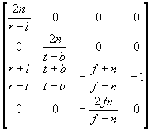

#include <nitro/gx/g3_util.h>
void G3_FrustumW( fx32 t, fx32 b, fx32 l, fx32 r, fx32 n, fx32 f, fx32 scaleW, MtxFx44 * mtx );
| t | Y coordinate at the top of the near clipping plane |
| b | Y coordinate at the bottom of the near clipping plane |
| l | X coordinate at the left of the near clipping plane |
| r | X coordinate at the right of the near clipping plane |
| n | Distance from viewpoint to the near clipping plane |
| f | Distance from viewpoint to the far clipping plane |
| scaleW | Precision adjustment parameter for the view volume |
| mtx | Pointer to a 4x4 matrix. |
None.
This function sets the Matrix mode to the Projection mode. This function also sets the Frustum matrix as the current matrix. If mtx is not NULL, then the perspective projection matrix is also set in *mtx.
The diagram shows the matrix that is set.
 × scaleW
The divider is used internally. Refer to Divider Usage Notes when using this function inside an interrupt.
G3_Frustum, G3_PerspectiveW, G3_OrthoW
2004/04/27 Initial version.
CONFIDENTIAL